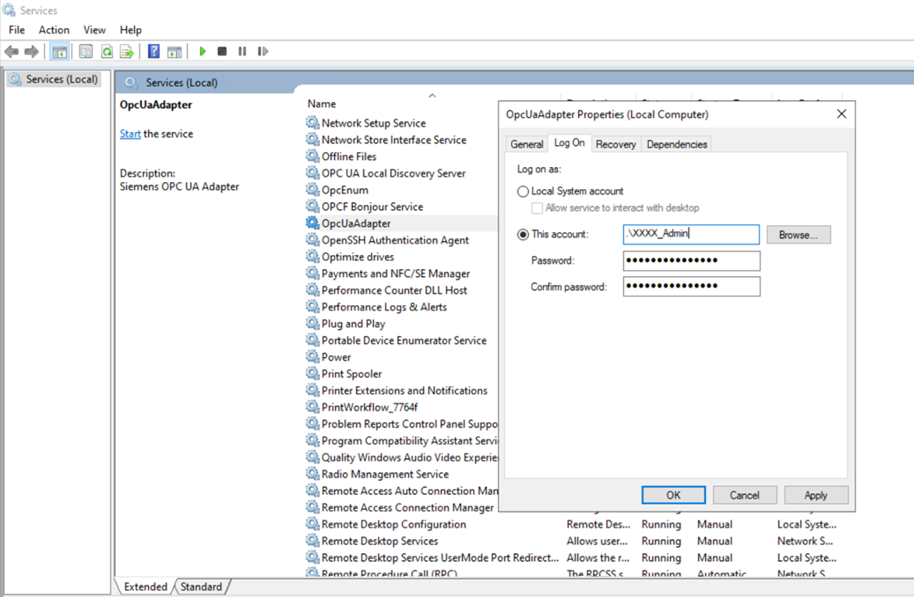

Troubleshooting ApplicationCertificate cannot be found
When connecting to an OPC UA server, the following error might occur:
ApplicationCertificate cannot be found
This might happen after the certificate is regenerated.
To solve this issue, do the following:
- Stop the OpcUaAdapter service.
- Open the OpcUaAdapter Properties.
- Select the Log On tab.
- Select the This account option.
- Enter the name of the user (who regenerated the certificate).
NOTE: This user must have administrator privileges. - Enter and confirm the password.
- Click Apply and OK.
- Restart the service.
